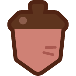

기운12/12

도토리 0
아직 주민이 없는 마을서식지를 꾸며
서식지를 꾸며
첫 병아리를 발견해요!
자연을 정리하고 빈 둥지를 놓아 보세요. 돌본 서식지에는 새로운 손님이 찾아올 수 있어요.
도토리는 발견과 목표 보상으로 얻어요. 장식과 시설 개선 중 골라 사용해 보세요.
놓은 시설 옮기기시설 개선 · 도토리 4개
아직 병아리가 없어요서식지를 꾸미고 찾아온 손님의 부탁을 들어주세요.

무엇을 함께 할까요?
성장하며 얻는 것여섯 병아리 · 새 가구 · 네 지역
마을 행복0
주거 만족0/0
도토리0
좋아하는 가구 옆의 둥지와 친밀함 3 이상의 주민은 각각 환경 점수에 기여합니다. 진행은 현재 브라우저에만 저장됩니다.
둥지 주변의 자연물과 가구가 서식지를 만듭니다.
친해지기 위한 작은 부탁
혼자서는 무거운 판자를 놓을 수 없어요. 건축 특기를 가진 주민과 재료가 필요합니다.